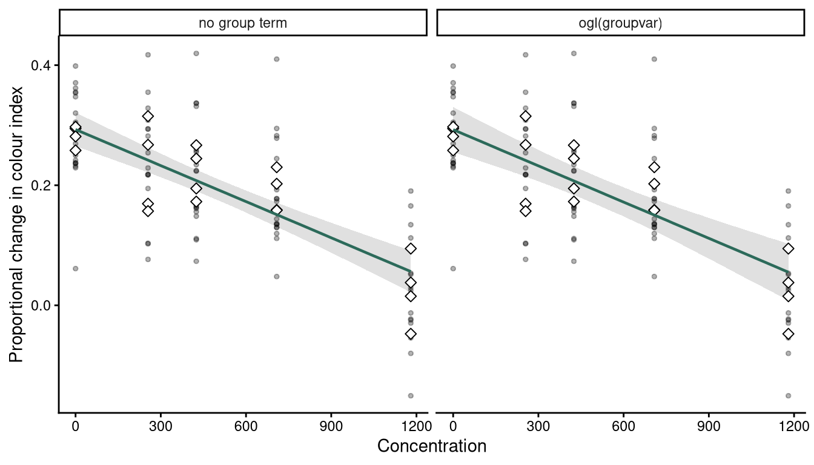
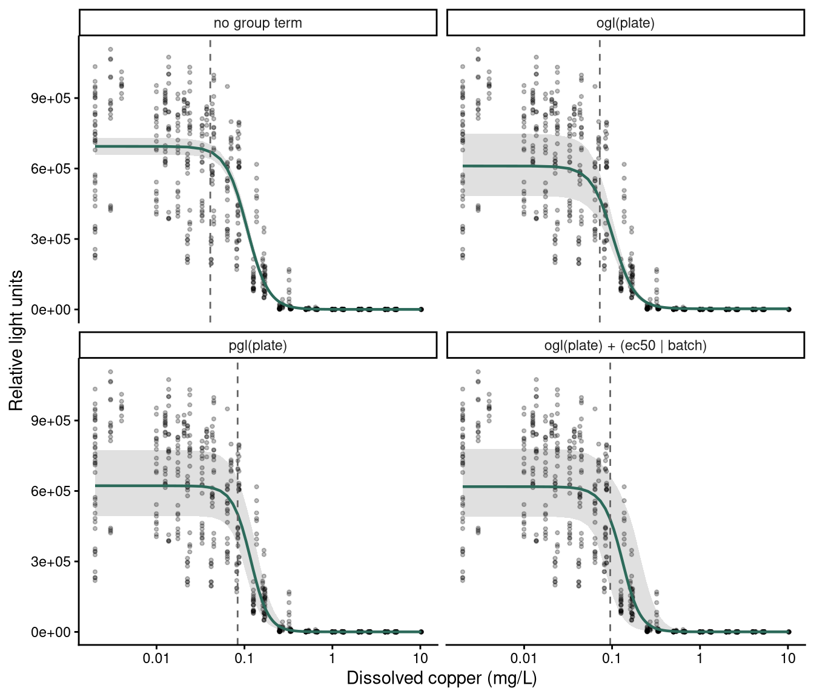
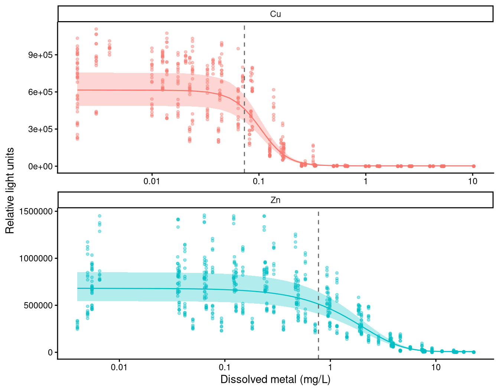
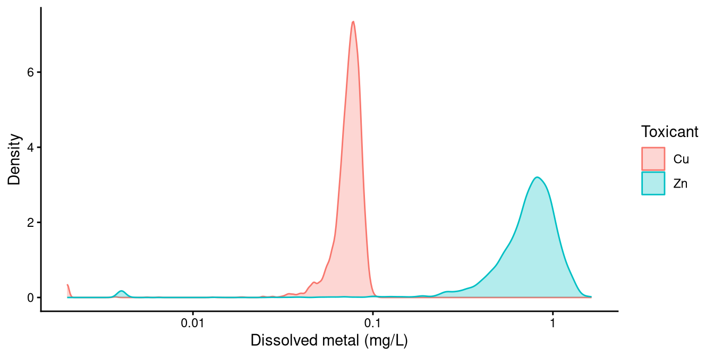
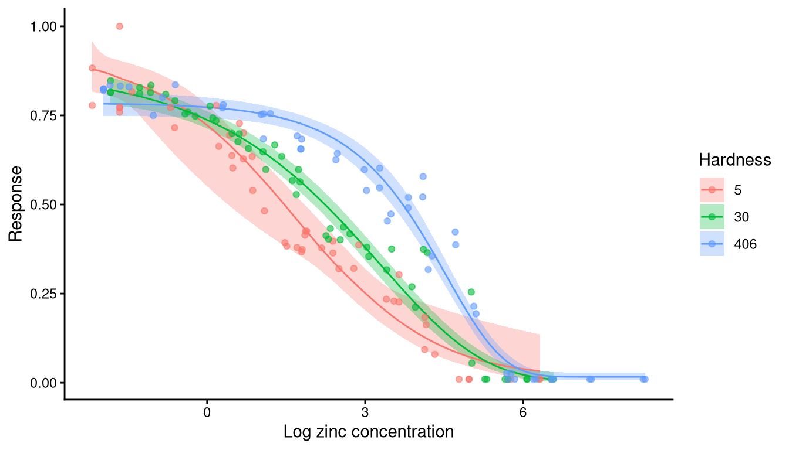

y ~ crf(x, model = "nec4param") + ogl(tank) # the whole curve is displaced
y ~ crf(x, model = "nec4param") + (top | tank) # one named parameter varies
y ~ crf(x, model = "nec4param") + pgl(plate) # every parameter varies
Development build. These pages are being revised and have not
been reviewed. The current course material is at
open-aims.github.io/cr_modelling_training.
Factor covariates and groupings
Non-independence, grouped designs, and comparing curves between levels
Background
Concentration-response designs are often more complicated than one response measured once at each of several concentrations. Replicates are housed together in tanks, a whole experiment is repeated on a second plate, fragments of one coral colony are spread across the treatments, or the same test is run under several water chemistries. Each of those puts structure into the data that the modules so far have ignored.
The same syntax can address two different problems, and the distinction between them decides almost everything else.
A grouping is a factor whose levels are not of interest in themselves. Tanks, vials, plates and genotypes are groupings: you are not trying to estimate the toxicity of tank 7, you are trying to stop the tank structure from making your intervals too narrow.
A factor covariate is one whose levels are of interest. Water hardness, temperature and exposure duration are factor covariates: the question is how toxicity changes across them, and an estimate is wanted for each level.
Pseudo-replication and hierarchical effects
Most ecotoxicological experiments contain grouping elements, such as tanks, vials or batches, that hold multiple measurements that cannot be treated as strictly independent. These are pseudo-replicates. They are handled in ecological statistics with mixed, hierarchical or random effects.
In concentration-response modelling they arise in two settings, and the difference is fundamental to how each is handled.


Within-concentration groupings
Tank and vial effects. Several individual organisms are housed together, and the container has a single concentration. The non-independence occurs within a concentration and does not extend across the concentration range, because a tank cannot hold two concentrations at once.
To avoid the criticism of pseudo-replication, it is common practice to pool such observations and model the group mean. That has two disadvantages. It discards the within-group information, including the within-group variance. And where the number of observations per group varies, it weights every group mean equally even though some rest on far fewer observations than others. In a growth experiment with some mortality, the number of individuals measured differs between treatments, and a group mean ignores that some groups hold a great deal of information and others very little.
Across-concentration groupings
Data also arise from repeated experiments, or from groupings within an experiment such as genotype or plate, that span the full range of the predictor. A within-group mean cannot be taken here, because a group is not at one concentration.
Strategies we have seen include ignoring the non-independence, fitting many independent datasets and then aggregating the threshold estimates afterwards, or normalising each experiment and ignoring the within-group correlation. Fitting separately is undesirable in that each fit rests on fewer data and returns a wider interval, though it is sometimes the right answer for the reasons set out below. Normalising each experiment to its own control has the problems module 5 describes, and Normalising to a control below measures them on an assay that does it.
An introduction to mixed modelling
Mixed effects models are common in ecology and are theoretically the right way to handle non-independence in an experimental design. A full treatment is beyond this course, and the short video below introduces the concepts non-technically. The example is a field study, and the ideas transfer directly.
Random effects for non-linear models
One distinction from the video matters here: the difference between a random intercept model and a random slope and intercept model.
Two things make this harder in a non-linear setting than in the linear models the video uses.
A non-linear model does not have a slope and an intercept. It has top, bot, nec, beta, ec50 and others, and a deviation can be placed on any of them.
And bayesnec fits on an identity link, so the mean is on the scale of the response. Most of the families appropriate to this work are bounded at 0, at 1, or at both. A deviation that pushes the mean outside those bounds describes an impossible response, which matters below.
The choice between the two follows directly from the distinction above. Within-concentration groupings take a deviation on the intercept alone, because a tank sits at one concentration and the data contain no information about how the rest of the curve varies between tanks. Across-concentration groupings can take a deviation on the whole curve, because each level spans the concentration range.
Group-level terms in bayesnec
Three forms are available, and they differ in how much of the curve is allowed to vary.
ogl() adds an offset at the group level: the whole fitted curve is displaced up or down for each level, keeping its shape. (par | group) uses the ordinary brms syntax to place a deviation on one named parameter. pgl() places a deviation on every parameter of the equation at the group level, which fits a separate curve shape for each level.
(par | group) names a parameter, and a model set is a set of equations that do not all have the same parameters: bot belongs to nec4param and not to nec3param. Where the named parameter is absent the term is dropped for that equation and the fit goes ahead without it, reported by a message that is easily lost in Stan’s compilation output. check_formula(f, data, run_par_checks = TRUE) reports it for every equation of the set before anything is fitted.
Deviations that cannot leave the support
Here a grouped model in bayesnec differs from the same model fitted directly in brms, and the difference governs how any output below should be read.
brms declares a group-level deviation unconstrained, which is correct for a Gaussian response on an identity link and wrong for every other family here. A deviation added to top on a response bounded by 0 and 1 can put the mean above 1, which no beta distribution can represent, and Stan rejects the proposal and records a divergent transition. On a boundary-adjacent parameter, most proposals are rejected and the fit is unusable.
bayesnec therefore applies the deviation multiplicatively wherever it acts on the whole curve or on top or bot. On a 0 to 1 response the deviation scales the odds of the mean; on a positive response it scales the mean itself. A deviation of zero leaves the curve exactly as it was, so top, bot, nec and beta keep their meanings, while the mean can no longer leave its support however far a proposal travels.
The difference is large. On a simulated beta-binomial design with an ogl() term, across three seeds, the multiplicative form gave no divergent transitions at all, against 70 to 95 per cent of transitions diverging under the additive form on the same data, and it sampled about twice as fast (bayesnec #257). On the herbicide data with a nec4param equation, a (bot | herbicide) term gave 51 divergent transitions of 2,000 under the additive form at adapt_delta = 0.95, and none at Stan’s default of 0.8 under the multiplicative one (bayesnec #294).
A deviation on nec, ec50, beta, slope, d or f is still added directly, because none of those is bounded by the likelihood: nec and ec50 are on the predictor axis, and the rest are estimated on a log scale.
One restriction remains. The transformation of the mean is defined only where the mean is provably inside its range. For neclin, neclinhorme and ecxlin, whose mean is unbounded below, and on a 0 to 1 response for the hormesis equations, whose mean can reach or exceed 1, the ogl() offset is therefore added directly, and bnec() raises adapt_delta to 0.99 to reduce the divergent transitions that follow. A Gaussian response has no bounds, so there the offset is always added directly.
Priors on the group-level terms
A group-level term adds a standard deviation for each parameter it applies to, and ogl() adds an offset as well. Module 6 describes how bayesnec builds its priors, and these follow the same three-way split.
The scale s is one tenth of the observed range of the quantity the deviation is applied to: the predictor range for nec and ec50, the response range for a deviation added to the response directly, and 0.5 for the parameters estimated on a log scale. Some deviations are applied multiplicatively, which is the case for top, bot and the whole-curve ogl offset on a bounded or a positive response. Those live on a log or a log-odds scale rather than on the response scale, so the same rule is converted onto that scale before it is used.
A group-level standard deviation is then given student_t(3, 0, s) and the ogl offset normal(0, s). Under the first there is a probability of about 0.39 that the group-level standard deviation exceeds s, so it is weakly informative rather than tight.
s comes from the data rather than from the spread of the parameter’s own prior. The two are different quantities, and deliberately so: a prior standard deviation of 2.5 times that of the response is a reasonable statement of ignorance about a level, and a poor one about the deviation around that level.
Deviation on the intercept
The common case in ecotoxicology is replicate tanks or vials holding several organisms each, which is the within-concentration grouping above.


The example is an exposure of small Acropora millepora colonies, about 11 mm fragments, to 1-methylnaphthalene in replicated flow-through exposures. Partial colony mortality was measured daily for seven days and again after a further seven days in clean seawater. Colour score is used here.
colour <- read.csv("vignettes/example_ogl.csv") |>
mutate(y = Perc_change / 100,
groupvar = factor(paste(Replicate, Treatment, sep = "_")),
x = as.numeric(Treatment)) |>
na.omit()
c(rows = nrow(colour), concentrations = n_distinct(colour$x),
containers = n_distinct(colour$groupvar)) rows concentrations containers
97 5 20 The response is the proportional change in colour index and the predictor is the treatment concentration. The grouping combines the replicate and the treatment, so that each container is uniquely identified; replicates are commonly labelled 1 to 5 within each treatment and are not unique across treatments.
ggplot(colour, aes(x, y, colour = groupvar)) +
geom_jitter(show.legend = FALSE) +
labs(x = "Concentration", y = "Proportional change in colour index") +
theme_classic()
A deviation on the intercept is what suits this design. The same fit is made with and without it, so the two can be compared.
fit_plain <- bnec(y ~ crf(x, model = "ecxlin"), data = colour, seed = 70)
fit_ogl <- bnec(y ~ crf(x, model = "ecxlin") + ogl(groupvar),
data = colour, seed = 70)ecxlin is used rather than a full model set, to keep the example to two fits. It is a linear decline, so this is a simple linear regression with a group-level offset.
ogl(groupvar) is preferred here to (top | groupvar). Both displace the curve, and the first states that intention directly. The response here includes negative values, so it is fitted with a Gaussian family, and the offset is added directly for the reason Deviations that cannot leave the support gives.
read.csv("vignettes/data/grouping_ogl_compare.csv") |> kable()| fit | weight | elpd_diff | se_diff | pareto_k_over_0.7 |
|---|---|---|---|---|
| no group term | 0.189 | -2.4 | 2.2 | 0 |
| ogl(groupvar) | 0.811 | 0.0 | 0.0 | 0 |
The comparison is by leave-one-out cross-validation, as module 4 describes, and it reports two things that do not say the same. The pseudo-BMA weight favours the grouped fit at 0.811 against 0.189. The difference in expected log predictive density is 2.4 with a standard error of 2.2, which is about one standard error, so these data support the container term weakly rather than decisively. Twenty containers over five concentrations, holding 97 observations between them, is a small amount of information about between-container variation, and the weight on its own would have read as stronger evidence than that.
Each fit is drawn with the mean of each container marked, since that mean is the quantity ogl(groupvar) gives a deviation to.
ogl_curves <- read.csv("vignettes/data/grouping_ogl_curves.csv") |>
mutate(fit = factor(fit, levels = c("no group term", "ogl(groupvar)")))
# ggbnec_data() returns three things in one frame and each layer takes the rows
# it needs. `y_ci` traces the credible band as a closed polygon, so it has twice
# as many rows as the curve does and `y_e` is NA on the return half; `x_r` and
# `y_r` hold the observations, on rows where the curve columns are NA. Passing
# the whole frame to every layer draws the right picture and fills the render
# with warnings about removed rows.
ogl_band <- filter(ogl_curves, !is.na(x_e))
ogl_line <- filter(ogl_curves, !is.na(y_e))
ogl_obs <- filter(ogl_curves, !is.na(x_r))
# The container means are drawn on both panels, so that the two panels differ in
# the fit and in nothing else. They are computed from the grouped fit, which is
# the one whose plot data carry the container each observation came from.
ogl_means <- ogl_obs |>
filter(!is.na(group)) |>
group_by(group) |>
summarise(x_r = first(x_r), y_r = mean(y_r), .groups = "drop")
ggplot(ogl_band, aes(x = x_e)) +
geom_polygon(aes(y = y_ci), fill = "grey80", colour = NA, alpha = 0.6) +
geom_point(data = ogl_obs, aes(x = x_r, y = y_r), alpha = 0.3, size = 1) +
geom_point(data = ogl_means, aes(x = x_r, y = y_r), shape = 23,
fill = "white", size = 2.2) +
geom_line(data = ogl_line, aes(y = y_e), colour = "#2c6a5a",
linewidth = 0.8) +
facet_wrap(~fit) +
labs(x = "Concentration", y = "Proportional change in colour index") +
theme_classic()
The container means scatter widely within each concentration. Four containers sit at each of the five, and at 255 their means run from 0.157 to 0.315, a spread of 0.158 against a whole fitted decline of 0.238 from 0.293 to 0.055. That scatter is what ogl(groupvar) estimates a standard deviation for. The two credible bands are nonetheless close to the same width, which agrees with an elpd difference of about one standard error: twenty containers is enough to estimate the standard deviation and not enough to settle whether it is needed.
Deviation on every parameter
Where a grouping spans the whole concentration range, the curve can differ between levels in more than its height. pgl() places a deviation on every parameter of the equation at once, which is what allows that. Which term a design needs follows from what differs between its levels, and on the assay below that can be measured before anything is fitted.

The assay
The example is the bioluminescent bacterial assay developed at AIMS for tropical marine conditions (Luter et al. 2025). Vibrio azureus strain Lum-31 emits light as a by-product of metabolism, so anything that interferes with electron transport reduces the light emitted. Twenty microlitres of cell suspension goes into 180 µL of sample in a white 96-well plate, and the reading itself is the endpoint, in relative light units. One plate holds a complete concentration series of eleven concentrations by four wells, so a plate spans the whole predictor range, and the assay is run repeatedly on the same reference toxicant.
lum31 ships with bayesnec and holds sixteen copper plates and seventeen zinc plates, each read at 15 and at 30 minutes of exposure.
data(lum31)
cu15 <- droplevels(subset(lum31, toxicant == "Cu" & minutes == 15))
str(cu15)'data.frame': 704 obs. of 10 variables:
$ toxicant : Factor w/ 1 level "Cu": 1 1 1 1 1 1 1 1 1 1 ...
$ batch : Factor w/ 5 levels "19Mar24","28Mar24",..: 1 1 1 1 1 1 1 1 1 1 ...
$ plate : Factor w/ 16 levels "Cu 19Mar24 Rep1B",..: 1 1 1 1 1 1 1 1 1 1 ...
$ conc_group: Factor w/ 176 levels "Cu 19Mar24 Rep1B-c01",..: 1 1 1 1 2 2 2 2 3 3 ...
$ well : Factor w/ 704 levels "Cu 19Mar24 Rep1B-w01",..: 1 2 3 4 5 6 7 8 9 10 ...
$ minutes : int 15 15 15 15 15 15 15 15 15 15 ...
$ conc : num 0.003 0.003 0.003 0.003 0.0137 ...
$ rlu : num 1064085 1107620 990758 1067172 1032736 ...
$ censoring : chr "none" "none" "none" "none" ...
$ rlu_cens : num 1064085 1107620 990758 1067172 1032736 ...Copper at 15 minutes is used throughout this section, for two reasons. Copper’s mean response falls below the control at every concentration on every plate, so no hormesis equation is needed to describe it, where zinc rises above its control at low concentrations. And the 15-minute read has fewer readings at the instrument floor than the 30-minute read of the same plates, so the censoring bound decides less of the answer.
The design replicates at three scales, and each is a different problem.
| unit | what it is | spans the series | route |
|---|---|---|---|
conc_group |
the four wells at one concentration on one plate | no | ogl() |
plate |
one complete test | yes | ogl(), pgl(), (par \| group) |
toxicant |
copper or zinc | yes, and of interest in itself | bnec_group() |
The first is the within-concentration case the coral colour example above covers. This section takes the second, and the section on factor covariates takes the third.
ggplot(cu15, aes(x = conc, y = rlu_cens, group = plate)) +
geom_point(alpha = 0.3, size = 1) +
stat_summary(fun = mean, geom = "line", linewidth = 0.3) +
scale_x_continuous(transform = "log10", labels = function(x) signif(x, 2)) +
labs(x = "Dissolved copper (mg/L)", y = "Relative light units") +
theme_classic()
Luminescence declines gently over the lower half of each series and then falls to near zero over a fourfold range of concentration. The sixteen plates are separated vertically at the control and stay in much the same order until the response reaches its floor, which is what a per-plate multiplicative constant looks like. Concentrations are measured dissolved copper rather than nominal, and each batch was dosed separately, so the plates are not on a common concentration grid.
Normalising to a control
The plate reader sets its gain per read, so absolute luminescence is a property of the read rather than of the assay.
cu15 |>
group_by(plate) |>
filter(conc == min(conc)) |>
summarise(control_rlu = median(rlu_cens), .groups = "drop") |>
summarise(plates = n(), lowest = min(control_rlu),
highest = max(control_rlu),
ratio = round(max(control_rlu) / min(control_rlu), 1)) |>
kable()| plates | lowest | highest | ratio |
|---|---|---|---|
| 16 | 230976 | 1065628 | 4.6 |
Gain is a per-plate multiplicative constant, so dividing each plate by a per-plate quantity does remove it. That is what the analysis published with these data does: Luter et al. (2025) divide each reading by the median of its plate’s four control wells, and then divide the result by the plate maximum.
Module 2 argues against dividing a response by an estimated control mean, and Ritz et al. (2026) measure the bias and the coverage that follow from it. Every observation sharing a denominator becomes correlated with every other, and an analysis treating them as independent reports effect doses biased upwards on intervals that are too narrow. In their second simulation scenario, fitting the normalised response as though the observations were independent gave ED10 bias of 2.6 to 6.8 per cent, on intervals covering the true value 0.88 to 0.91 of the time against a nominal 0.95. Modelling the raw growth rates gave 0.7 to 2.1 per cent and 0.94 to 0.96. They report that weights do not remedy it, and that normalising each curve by its own few control measurements introduces more correlation than a control average pooled across curves. This assay normalises each plate by four control wells.
A group-level term on the plate is the alternative. It targets the same per-plate constant the division removes, and estimates that constant with its uncertainty attached rather than conditioning on a point estimate. The response stays as recorded, and the control level becomes top, a parameter of the equation, which is what ecx() and nsec() are measured from.
Which term matches depends on what the constant multiplies. Gain scales the whole reading, the lower asymptote included, so ogl() is the form that matches it: the deviation is applied to the fitted value. (top | plate) would scale top and leave bot common between plates, which is a different claim about the instrument. For a three-parameter equation whose curve is top times a function of the predictor the two coincide.
Whether gain is the whole of the difference between tests can be asked of the recorded data before any model is fitted. If two plates differ only by a multiplicative constant, then dividing each by its own control removes that constant, and both must cross half their own control at the same concentration.
half_control <- cu15 |>
mutate(rank = as.integer(sub(".*-c", "", as.character(conc_group)))) |>
group_by(batch, plate, rank) |>
summarise(conc = first(conc), m = mean(rlu_cens), .groups = "drop_last") |>
mutate(rel = m / m[rank == 1]) |>
summarise(half_ctl = {
i <- which(rel < 0.5)[1]
exp(log(conc[i - 1]) + (0.5 - rel[i - 1]) *
(log(conc[i]) - log(conc[i - 1])) / (rel[i] - rel[i - 1]))
}, .groups = "drop")
half_control |>
group_by(batch) |>
summarise(plates = n(), lowest = signif(min(half_ctl), 3),
highest = signif(max(half_ctl), 3), .groups = "drop") |>
kable()| batch | plates | lowest | highest |
|---|---|---|---|
| 19Mar24 | 4 | 0.1100 | 0.1150 |
| 28Mar24 | 2 | 0.1360 | 0.1390 |
| 5Apr24 | 3 | 0.0898 | 0.1240 |
| 23Apr24 | 5 | 0.0747 | 0.0882 |
| 1Oct24 | 2 | 0.1710 | 0.2160 |
Within a batch the plates agree. The four plates of 19Mar24 cross between 0.110 and 0.115 mg/L and the two of 28Mar24 between 0.136 and 0.139, which is the multiplicative constant doing all the work. Between batches they do not: the batch medians run from 0.081 to 0.193, a factor of 2.4, and 92 per cent of the variance in the logged crossing lies between batches rather than within them.
Each batch was dosed separately, so a difference in the concentration at which the response falls is a difference between preparations of the test rather than between reads of the plate reader. It is a real feature of the data and it is not gain, so ogl() cannot represent it.
The plate term has one limit. Gain and genuine plate-to-plate biological variation are confounded in the estimated per-plate factor, and nothing in these data separates them. That does not affect the N(S)EC or an ECx, for which both are nuisance plate effects, but the plate-level standard deviation is not a biological quantity and should not be reported as one.
Preparing the response
Two properties of the recorded response are settled before any fit, and both follow from how the instrument works.
Readings were blank-corrected against wells of artificial seawater, so a well emitting less light than the blank gives a negative value, and the source replaced such a value by zero. Luminescence cannot be negative, so a zero here is measurement noise about a small positive value rather than an absence of light. These readings are left-censored. A Gamma likelihood requires a strictly positive response, so the censoring bound is the smallest positive reading on the plate. rlu_cens holds the response in that form and censoring marks which readings reached the floor.
lum31 |>
filter(toxicant == "Cu") |>
group_by(minutes) |>
summarise(readings = n(), left_censored = sum(censoring == "left"),
per_cent = round(100 * mean(censoring == "left"), 1),
.groups = "drop") |>
kable()| minutes | readings | left_censored | per_cent |
|---|---|---|---|
| 15 | 704 | 106 | 15.1 |
| 30 | 704 | 197 | 28.0 |
A Gamma with a single shape parameter has a constant coefficient of variation, and these data do not. Taking the four wells at each concentration on each plate, and the median across the sixteen plates of their within-cell coefficient of variation, gives the table below. Concentration is summarised the same way, because the plates are not on a common concentration grid.
cu15 |>
mutate(rank = as.integer(sub(".*-c", "", as.character(conc_group)))) |>
group_by(rank, plate) |>
summarise(conc = first(conc), mean_rlu = mean(rlu_cens),
cv = sd(rlu_cens) / mean(rlu_cens), .groups = "drop_last") |>
group_by(rank) |>
summarise(median_conc = signif(median(conc), 3),
mean_rlu = signif(mean(mean_rlu), 3),
cv = round(median(cv), 3), .groups = "drop") |>
kable()| rank | median_conc | mean_rlu | cv |
|---|---|---|---|
| 1 | 0.0020 | 734000 | 0.045 |
| 2 | 0.0126 | 677000 | 0.045 |
| 3 | 0.0225 | 658000 | 0.043 |
| 4 | 0.0430 | 619000 | 0.042 |
| 5 | 0.0841 | 505000 | 0.062 |
| 6 | 0.1670 | 168000 | 0.214 |
| 7 | 0.3320 | 6940 | 0.582 |
| 8 | 0.6620 | 1320 | 0.562 |
| 9 | 1.3200 | 133 | 0.931 |
| 10 | 2.6400 | 241 | 0.963 |
| 11 | 5.2800 | 294 | 0.953 |
Mean luminescence falls from 734,000 relative light units at the lowest concentration to 505,000 at 0.084 mg/L and 6,940 at 0.33, so most of the decline happens over a fourfold range of concentration. The coefficient of variation rises as the response falls, from 0.045 at the lowest concentration to 0.58 at 0.33 mg/L and about 0.95 at the top three, where the readings are at the instrument floor. One shape parameter cannot serve a series that does that, and the compromise it reaches is dominated by the noisy low end. disp("power") writes the dispersion parameter as a function of the fitted mean instead of holding it constant, which module 5 covers. Every fit below includes it, so that what differs between them is the group-level term alone.
The plate term compared
One equation is fitted four ways, so that what is compared is the group-level term and not the equation. Comparing two model averages by leave-one-out would confound the two. The fourth names the structure the table above found: a displacement on the plate for the gain, and a deviation on the concentration at which the curve falls for the batch.
plate_plain <- bnec(rlu_cens | cens(censoring) ~ crf(log(conc), "ecxll4") +
disp("power"),
data = cu15, family = Gamma(link = "identity"), seed = 70)
plate_ogl <- bnec(rlu_cens | cens(censoring) ~ crf(log(conc), "ecxll4") +
ogl(plate) + disp("power"),
data = cu15, family = Gamma(link = "identity"), seed = 70)
plate_pgl <- bnec(rlu_cens | cens(censoring) ~ crf(log(conc), "ecxll4") +
pgl(plate) + disp("power"),
data = cu15, family = Gamma(link = "identity"), seed = 70)
plate_batch <- bnec(rlu_cens | cens(censoring) ~ crf(log(conc), "ecxll4") +
ogl(plate) + (ec50 | batch) + disp("power"),
data = cu15, family = Gamma(link = "identity"), seed = 70)Two group-level terms on two different groupings go into one formula, and make_brmsformula() shows what they become: ogl ~ 1 + (1 | plate) and ec50 ~ 1 + (1 | batch).
ecxll4 is the equation the whole model set gives most weight to on these readings. That set is the copper level of the bnec_group() fit under Factor covariates below, which is the same 704 readings with the same plate term and the same dispersion sub-model, and its weights are reported there. Three equations sit within 0.02 of each other in it, so the selection is weak and ecxll4 stands here for a group of equations the data support about equally. Holding it fixed is what makes the comparison below a comparison of terms.
read.csv("vignettes/data/grouping_plate_compare.csv") |> kable()| fit | weight | elpd_diff | se_diff | pareto_k_over_0.7 |
|---|---|---|---|---|
| no group term | 0.000 | -564.4 | 29.2 | 0 |
| ogl(plate) | 0.000 | -297.9 | 27.0 | 0 |
| pgl(plate) | 0.999 | 0.0 | 0.0 | 2 |
| ogl(plate) + (ec50 | batch) | 0.001 | -72.6 | 19.7 | 0 |
The expected log predictive density of ogl(plate) exceeds the ungrouped fit’s by 266.5, and adding the batch term raises it by a further 225.3. That second step is the positional shift the table above measured, now recovered by a fitted model: one deviation on five batches accounts for three quarters of the difference in expected log predictive density between ogl(plate) and the best fit of the four.
pgl(plate) takes the weight nonetheless, exceeding the batch fit by 72.6 with a standard error of 19.7. Every difference here is several times its standard error, which is a different situation from the coral colour comparison above, where the same test could not separate two fits.
Two of the 704 observations have a Pareto k above 0.7 under pgl(plate) and none do under the other three. The estimate for those two points rests on the importance-sampling approximation rather than on a refit, and two points of 704 will not reverse a difference of this size.
plate_levels <- c("no group term", "ogl(plate)", "pgl(plate)",
"ogl(plate) + (ec50 | batch)")
plate_curves <- read.csv("vignettes/data/grouping_plate_curves.csv") |>
mutate(fit = factor(fit, levels = plate_levels))
plate_obs <- read.csv("vignettes/data/grouping_plate_obs.csv")
plate_nsec <- read.csv("vignettes/data/grouping_plate_estimates.csv") |>
filter(estimate == "NSEC") |>
mutate(fit = factor(fit, levels = plate_levels))
ggplot(plate_curves, aes(x = x)) +
geom_ribbon(aes(ymin = Q2.5, ymax = Q97.5), fill = "grey80", alpha = 0.6) +
geom_point(data = plate_obs, aes(x = conc, y = rlu_cens), alpha = 0.25,
size = 0.8) +
geom_line(aes(y = Estimate), colour = "#2c6a5a", linewidth = 0.8) +
geom_vline(data = plate_nsec, aes(xintercept = Q50), linetype = 2,
colour = "grey40") +
facet_wrap(~fit, ncol = 2) +
scale_x_continuous(transform = "log10", labels = function(x) signif(x, 2)) +
labs(x = "Dissolved copper (mg/L)", y = "Relative light units") +
theme_classic()
The panels differ in the width of the credible band and in where the N(S)EC rule falls. Ungrouped, the band around the control is narrow, because the spread between tests has nowhere to go but the residual and the curve is reported as well determined. With any of the three grouped terms that spread is attributed to the grouping instead, and the control band widens towards the range the control readings themselves span.
That is the mechanism behind the threshold estimates. The N(S)EC is read where the fitted curve leaves the lower bound of the control, so a narrow control band is crossed early and a wide one late. The rule sits well to the left of the shoulder in the ungrouped panel and at the shoulder in the other three.
The standard deviations say what differs. ecxll4 is bot + (top - bot) / (1 + exp(exp(beta) * (x - ec50))), so pgl() estimates four of them.
read.csv("vignettes/data/grouping_plate_sd.csv") |> kable()| fit | grouping | term | Estimate | Est.Error | Q2.5 | Q97.5 |
|---|---|---|---|---|---|---|
| ogl(plate) | plate | ogl_Intercept | 0.424 | 0.080 | 0.299 | 0.610 |
| pgl(plate) | plate | beta_Intercept | 0.116 | 0.033 | 0.063 | 0.190 |
| pgl(plate) | plate | ec50_Intercept | 0.356 | 0.074 | 0.246 | 0.533 |
| pgl(plate) | plate | botgl_Intercept | 0.648 | 0.175 | 0.357 | 1.051 |
| pgl(plate) | plate | topgl_Intercept | 0.465 | 0.087 | 0.331 | 0.668 |
| ogl(plate) + (ec50 | batch) | batch | ec50_Intercept | 0.509 | 0.229 | 0.243 | 1.067 |
| ogl(plate) + (ec50 | batch) | plate | ogl_Intercept | 0.476 | 0.089 | 0.335 | 0.683 |
ogl(plate) puts the between-plate difference at 0.424 on the log scale the deviation is applied on, a factor of 1.53 in luminescence. The batch fit keeps a displacement of much the same size, 0.476 on the plate, and adds a batch deviation of 0.509 on ec50, a factor of 1.66 in the concentration at which the curve reaches its midpoint. Those two numbers are the two effects separated: the plate term is the gain and the batch term is the shift in potency.
Under pgl(plate) the same deviations appear on one grouping. The largest are on the asymptotes, botgl at 0.648 and topgl at 0.465, and ec50 takes 0.356 against the batch fit’s 0.509. A per-plate deviation can encode a per-batch shift, because the sixteen plates sit within five batches, so pgl(plate) reaches the positional difference without being told where it lives. beta, the slope, is the most nearly common at 0.116.
What pgl(plate) has and the batch fit does not is a deviation on bot, and it is the largest of the four. Copper falls to near zero and 106 of its 704 readings are at the instrument floor, so the level the curve settles to is the part of it the plates are least likely to share. The deviation on bot, rather than the positional shift, is what accounts for the remaining 72.6 of expected log predictive density.
read.csv("vignettes/data/grouping_plate_estimates.csv") |> kable()| fit | estimate | Q50 | Q2.5 | Q97.5 |
|---|---|---|---|---|
| no group term | NSEC | 0.0408597 | 0.0092292 | 0.0562975 |
| no group term | EC10 | 0.0561833 | 0.0485166 | 0.0600746 |
| ogl(plate) | NSEC | 0.0725186 | 0.0301372 | 0.0894623 |
| ogl(plate) | EC10 | 0.0543068 | 0.0476603 | 0.0566041 |
| pgl(plate) | NSEC | 0.0836085 | 0.0542262 | 0.1166431 |
| pgl(plate) | EC10 | 0.0634899 | 0.0564687 | 0.0757235 |
| ogl(plate) + (ec50 | batch) | NSEC | 0.0952662 | 0.0404445 | 0.1669191 |
| ogl(plate) + (ec50 | batch) | EC10 | 0.0684534 | 0.0332732 | 0.1199093 |
The N(S)EC more than doubles across the four fits, from 0.041 mg/L ungrouped to 0.073, 0.084 and 0.095, and its lower bound rises from 0.009 to between 0.030 and 0.054. EC10 changes much less, from 0.056 to 0.054, 0.063 and 0.068. A threshold is the estimate the grouping decides, because it is read where the curve leaves the control and that is where the between-test spread is largest; an EC10 is read further down a curve the tests agree about more closely.
An analysis that treated these 704 readings as independent would report a no-effect concentration less than half the one the structure supports, on a lower bound a factor of four to six too low.
The choice between the grouped forms
The batch fit is the more exact statement and pgl(plate) is the one this module uses, for two reasons beyond the predictive density.
(ec50 | batch) names a parameter, and the parameter that sets where a curve falls does not have one name across the model set. Ten of the 23 equations have ec50, ten have nec, and ecxlin, ecxexp and ecxsigm have neither. In the decline set that is eight, three and three. A term written (ec50 | batch) would therefore be fitted on eight equations of that set, dropped with a message on three, and have nothing to attach to on the remaining three, so the set would be averaged over equations making different claims about the batches. check_formula() reports which, as Group-level terms in bayesnec describes.
pgl() places a deviation on every parameter the equation has, whatever they are called, so it makes the same claim about every equation of a set. That is what recommends it for a workflow that fits a model set rather than one equation.
That generality has two consequences. The first is the one The number of levels a deviation needs gives: four standard deviations estimated from sixteen levels here, where ogl() estimates one. The second is run time, because those four bring 64 deviations with them against ogl()’s 16, and a model set multiplies that by the number of equations. On one equation the difference is minutes; on a set fitted at each level of a factor it is the difference between a job that runs while you work and one that runs overnight.
Where a design has enough levels of the grouping the shift belongs to, naming it is better. Five batches is exactly the minimum this module gives for estimating a group-level standard deviation, and the batch deviation’s interval, 0.243 to 1.067, is correspondingly wide.
The number of levels a deviation needs
A group-level standard deviation is estimated from the variation between levels, so it needs levels to estimate it from. The consensus is that five should be treated as a minimum, and a fit in Stan may need more.
That minimum is easy to reach for tank effects, where there are usually several tanks per concentration and often twenty or thirty in total. Whether an across-concentration grouping reaches it depends on the design: the copper plates above are sixteen levels, and four genotypes or three seasons is a commoner situation and below the minimum.
The count is not the only constraint. ogl() estimates one standard deviation however many parameters the equation has, and pgl() estimates one for each of them, so the same number of levels supports the first and may not support the second. Where the levels are too few for either, and where they are of interest in themselves, the routes below apply instead.
Factor covariates
Where the levels are of interest in themselves, a deviation is the wrong tool entirely. A group-level term marginalises over the levels and returns one curve; a factor covariate asks for a curve, and a toxicity estimate, for each level.
bnec_group() is the route. It fits the model set independently within each level of a factor and model-averages within each level, so the equation describing one level need not be the equation describing another.
An interaction term written inside a bayesnecformula remains unavailable, and the reason is the one bnec_group() addresses. A model set is a set of different equations, so an interaction would have to be defined separately for each of them at every level, and where the levels differ in functional form the result is not one curve with level-specific parameters. Fitting the levels separately lets each level take its own equation rather than assuming that they share one.
Two routes are used below, and they answer different questions.
Fitting each level separately
bnec_group() takes the formula, the data and the name of the grouping column, and returns one model-averaged fit per level.
zn_cu_15 <- droplevels(subset(lum31, minutes == 15))
fits_tox <- bnec_group(
rlu_cens | cens(censoring) ~ crf(log(conc), "all") + ogl(plate) +
disp("power"),
data = zn_cu_15, group_var = "toxicant",
family = Gamma(link = "identity"),
chains = 4, iter = 5000, warmup = 4000, seed = 228,
control = list(adapt_delta = 0.99))That is the bioluminescent assay again, now taking its third scale of replication. Copper and zinc are two contaminants of interest rather than a sample from a population of metals, so they are levels and not a grouping. The plate term stays, because gain differs between plates within each metal; a plate term is not placed across the copper-against-zinc contrast, since the two arms were read at different gains and their relative light units are not comparable. model = "all" rather than decline, because zinc rises above its control at low concentrations.
The term is ogl(plate) although the section above found pgl(plate) the better description of the copper plates, and the first reason is run time. ogl() estimates one standard deviation and one deviation per level. pgl() estimates one of each for every parameter of the equation, so on a four-parameter equation over sixteen plates it samples 4 standard deviations and 64 deviations where ogl() samples 1 and 16. Here that is asked of fifteen equations at each of two levels, which is thirty fits. The open-AIMS/grouping-structures compendium, which runs the fits behind the bayesnec grouping vignette, measured 22.2 hours of sampling across the 189 fits of that vignette, thirty of which are this call; a pgl() version would add those parameters to each of the thirty.
The second reason is that this is the call the grouping and factor covariates vignette in bayesnec makes, so the estimates below can be read against the ones published with it.
This is the one bayesnec call in the module that names its sampler settings, and it names them for the same reason. That vignette’s fits are run as cluster jobs and stored, and this module reads the stored fit rather than sampling. The closing section says how. Every other bnec() fit in this module samples at bnec()’s defaults.
read.csv("vignettes/data/grouping_tox_weights.csv") |>
pivot_wider(names_from = toxicant, values_from = wi) |>
filter(if_any(-model, ~ .x >= 0.01)) |>
kable()| model | Cu | Zn |
|---|---|---|
| ecx4param | 0.311 | 0.000 |
| ecxwb1 | 0.058 | 0.147 |
| ecxll5 | 0.305 | 0.853 |
| ecxll4 | 0.322 | 0.000 |
The two metals do not agree on which equation describes them. Zinc puts 0.853 of its weight on ecxll5 and the remaining 0.147 on ecxwb1. Copper spreads its weight over four, with 0.322 on ecxll4, 0.311 on ecx4param, 0.305 on ecxll5 and 0.058 on ecxwb1, so the two equations taking most of copper’s weight take none of zinc’s. That is the case for fitting the levels separately: the single curve they would be shrunk towards is not one the data agree on.
No equation of the nec group takes weight at either level, so the model-averaged threshold reported below is an NSEC throughout rather than a mixture of NEC and NSEC estimates.
# The N(S)EC is taken from the estimates table rather than from the `nec_vals`
# column of the plot data, so that the line and the table are the same number.
# Both are posterior summaries of the same quantity, computed from different
# draws, and they differ in the third significant figure.
tox_nsec <- read.csv("vignettes/data/grouping_tox_estimates.csv") |>
filter(estimate == "NSEC") |>
rename(fit = toxicant)
tox_curves <- read.csv("vignettes/data/grouping_tox_curves.csv")
ggplot(filter(tox_curves, !is.na(x_e)), aes(x = x_e, colour = fit, fill = fit)) +
geom_polygon(aes(y = y_ci), colour = NA, alpha = 0.3) +
geom_point(data = filter(tox_curves, !is.na(x_r)), aes(x = x_r, y = y_r),
alpha = 0.4, size = 1) +
geom_line(data = filter(tox_curves, !is.na(y_e)), aes(y = y_e)) +
geom_vline(data = tox_nsec, aes(xintercept = Q50), linetype = 2,
colour = "grey40") +
facet_wrap(~fit, ncol = 1, scales = "free") +
scale_x_continuous(transform = "log10", labels = function(x) signif(x, 2)) +
scale_colour_hue(guide = "none") +
scale_fill_hue(guide = "none") +
labs(x = "Dissolved metal (mg/L)", y = "Relative light units") +
theme_classic()
The fitted band follows the observations down in both panels, and the readings scatter widely at every concentration while the band stays narrow, which is the plate term holding the between-plate spread out of the population curve. The two panels put the metals an order of magnitude apart on the concentration axis.
read.csv("vignettes/data/grouping_tox_estimates.csv") |> kable()| toxicant | estimate | Q50 | Q2.5 | Q97.5 |
|---|---|---|---|---|
| Cu | NSEC | 0.0731018 | 0.0305345 | 0.0909790 |
| Cu | EC10 | 0.0535446 | 0.0276991 | 0.0564703 |
| Cu | EC50 | 0.1026253 | 0.0994096 | 0.1064592 |
| Zn | NSEC | 0.7713012 | 0.2261564 | 1.2429225 |
| Zn | EC10 | 0.3487891 | 0.3138150 | 0.3831684 |
| Zn | EC50 | 1.5921237 | 1.5475962 | 1.6355072 |
Copper is the more potent of the two on every estimate, by a factor of 6.5 on EC10, 10.6 on the N(S)EC and 15.5 on EC50.
The EC50 is where this can be checked against a published result. Luter et al. (2025) fitted each plate separately on the normalised response and report EC50s averaging 0.109 mg/L for copper over sixteen plates and 1.546 for zinc over seventeen. One pooled fit with a plate term on the recorded readings gives 0.103 and 1.592. The two analyses agree to within six per cent on copper and three on zinc, on responses that are not on the same scale. What differs is where the variation between plates has gone: into the spread of sixteen and seventeen separate estimates there, and into a group-level standard deviation here.
The three estimates are not equally well determined, and the reason is where each sits on the curve. The copper EC50 interval runs 0.099 to 0.106 mg/L, a factor of 1.07 from end to end, and its N(S)EC interval 0.031 to 0.091, a factor of 3.0. A half-effect concentration sits in the middle of the concentration series where the observations are densest and the curve steepest; a threshold sits where the curve leaves the control, which is the part of a response the data constrain least.
compare_posterior() reduces the two posteriors to the probability that one exceeds the other, and returns the posteriors it used.
cmp_tox <- compare_posterior(fits_tox, comparison = "nec")
cmp_tox$prob_diffread.csv("vignettes/data/grouping_tox_posterior.csv") |>
ggplot(aes(x = value, group = model, colour = model, fill = model)) +
geom_density(alpha = 0.3) +
scale_x_continuous(transform = "log10", labels = function(x) signif(x, 2)) +
labs(x = "Dissolved metal (mg/L)", y = "Density",
colour = "Toxicant", fill = "Toxicant") +
theme_classic()
read.csv("vignettes/data/grouping_tox_prob_diff.csv") |> kable()| comparison | prob |
|---|---|
| Cu-Zn | 0.01375 |
The two posteriors barely overlap, and they differ in width as well as in position: copper’s runs from 0.031 to 0.091 mg/L, a factor of 3.0 from end to end, and zinc’s from 0.226 to 1.243, a factor of 5.5. Copper is both the more potent metal and the better determined one on these data, and the pairwise probability of 0.014 is what that separation reduces to. Two levels an order of magnitude apart in median can still overlap where one of them is poorly determined, which is the reason to read the densities alongside the probability.
bnec_group() does what a hand-written loop over the levels of the factor would do, and adds two things a loop does not.
It gives each level its own seed, realised in the calling session and stored on the returned object as level_seeds, so a grouped call repeats exactly.
And it can use a future plan across either the levels or the models within a level, choosing whichever arrangement takes fewer rounds and reporting which it took; module 4 covers the plans.
Each level’s fit is a bnec() fit, so it has the failed_models element that bnec() records, naming the equations that did not fit there and the message each returned. A level that lost part of its set is therefore visible rather than silently averaged over fewer equations. Both levels here lost ecxhormebc5, which is the initial-value problem of bayesnec #344 on a logged predictor that reaches negative values, so each average is over 14 of the 15 equations rather than all of them.
An interaction on a single equation
The alternative estimates the parameters of a single equation separately for each level, which is fewer parameters than a deviation on each and does not need five levels to work. bayesnec is used to choose the equation and to build the priors, and brms fits the interaction directly.
The case study is a subset of the data behind doi:10.1039/D2EM00063F, describing zinc toxicity to a freshwater micro-alga at three water hardnesses, at a fixed pH of 8.3. The response is population growth rate as a percentage of the control growth rate for each experiment. The data were supplied by Gwil Price.
zinc <- read.csv("vignettes/example_fi.csv") |>
na.omit() |>
mutate(y = (Pcon / max(Pcon) + 0.01) * 0.99,
x = log(Mean.Zn),
hardness = factor(round(Hardness))) |>
select(x, y, hardness)
range(zinc$y)[1] 0.0099 0.9999table(zinc$hardness)
5 30 406
50 51 50 Two preparation decisions are worth naming, because earlier modules argue against one of them.
The concentrations span more than four orders of magnitude and are logged, which is the decision module 7 covers under the scale of the predictor.
The response is divided by the maximum observed value and then shifted off 0 and 1. This is exactly the practice module 5 recommends against, and it is done here because these are the data as supplied: the response is already a percentage of each experiment’s own control, so the sampling variability of that control has already been discarded before the analysis began. Where you have the underlying growth rates, model those instead and read the decline from the fitted control. The shift off the boundaries is needed because brms is called directly below and does not make the adjustment bnec() makes.
ggplot(zinc, aes(x = x, y = y, colour = hardness)) +
geom_jitter() +
labs(x = "Log zinc concentration", y = "Response", colour = "Hardness") +
theme_classic()
The effect of hardness on toxicity is clear.
Which equation to use is not, so the whole decline set is fitted to the pooled data. screen_models(), from module 7, then drops every equation that fails check_sampling() and recomputes the weights over those that remain, and the best-supported equation is taken from the screened set.
fit_all <- bnec(y ~ crf(x, model = "decline"), data = zinc, seed = 70)
fit_all <- screen_models(fit_all)
best <- pull_best(fit_all)read.csv("vignettes/data/grouping_zinc_weights.csv") |>
mutate(wi = round(wi, 3)) |>
kable()check_sampling().
| model | waic | wi |
|---|---|---|
| nec3param | -254.2199 | 0.000 |
| nec4param | -251.3739 | 0.000 |
| ecxwb1 | -306.1118 | 0.902 |
| ecxwb1p3 | -293.8985 | 0.093 |
| ecxwb2p3 | -281.6038 | 0.001 |
| ecxll3 | -293.3476 | 0.003 |
pull_best(), from module 4, returns the highest-weighted equation and reports the weight alongside the number of candidates, which is what says whether the selection means anything. On these data it returns ecxwb1 with a weight of 0.902 out of the six candidates that passed the screen, so one equation holds almost all the weight and the route below is a route for that equation rather than for the set.
The brms formula and the priors are then read off that fit:
best_brms <- pull_brmsfit(best)
best_brms$formula
priors <- brms::prior_summary(best_brms)# The right-hand side of each parameter line is what changes: `~ 1` fits one
# value for every level, and `~ hardness` fits one per level.
bf_plain <- brms::bf(
y ~ bot + (top - bot) * exp(-exp(exp(beta) * (x - ec50))),
bot + ec50 + top + beta ~ 1, nl = TRUE)
bf_inter <- brms::bf(
y ~ bot + (top - bot) * exp(-exp(exp(beta) * (x - ec50))),
bot + ec50 + top + beta ~ hardness, nl = TRUE)The priors need one change before the interaction can be fitted, and it is the step most easily missed. bayesnec writes each parameter’s prior with no coef, so it applies to every population-level coefficient belonging to that parameter. Under ~ 1 that is the intercept alone, and the prior is exactly what was intended. Under ~ hardness it is the intercept plus one coefficient per non-reference level, and each of those would take a prior written to describe the parameter’s own value rather than a difference between levels. For ecxwb1 that puts beta(5, 2) on the top differences, and a beta density is zero outside (0, 1), so no level could have a top below the reference level’s.
Set the intercept and the level differences separately. The intercept keeps whatever bayesnec chose; the differences are centred on zero, meaning no difference between levels, and scaled to what the parameter measures:
inter_priors <- c(
# the intercept, as bayesnec set it
prior(beta(5, 2), nlpar = "top", coef = "Intercept"),
prior(beta(2, 5), nlpar = "bot", coef = "Intercept"),
prior(normal(2.387, 24.803), nlpar = "ec50", coef = "Intercept"),
prior(normal(0, 5), nlpar = "beta", coef = "Intercept"),
# the differences between hardness levels
prior(normal(0, 0.25), nlpar = "top"), # a proportion
prior(normal(0, 0.1), nlpar = "bot"), # a proportion, near zero
prior(normal(0, 2), nlpar = "ec50"), # the log predictor scale
prior(normal(0, 2), nlpar = "beta")) # a log slopefit_plain <- brms::brm(bf_plain, data = zinc, family = Beta(link = "identity"),
prior = priors, iter = 5000, seed = 700,
save_pars = brms::save_pars(all = TRUE))fit_plain keeps the priors as read, because under ~ 1 they are already right. Only the interaction needs the replacement, and it needs one more thing: somewhere to start. Each parameter starts at its pooled estimate and each level difference starts at zero.
fx <- brms::fixef(fit_plain)
init_fun <- function() {
list(b_bot = as.array(c(fx["bot_Intercept", "Estimate"], 0, 0)),
b_ec50 = as.array(c(fx["ec50_Intercept", "Estimate"], 0, 0)),
b_top = as.array(c(fx["top_Intercept", "Estimate"], 0, 0)),
b_beta = as.array(c(fx["beta_Intercept", "Estimate"], 0, 0)))
}Leave that out and three of the four chains fail before they start. The Beta family with an identity link requires the fitted mean to lie inside (0, 1) at every observation, and a randomly chosen starting point does not. bnec() supplies starting values of its own, which is why the model set fitted earlier gave no trouble; a formula handed straight to brm() does not inherit them. brms returns whichever chains survived, so check how many there are rather than reading the summary and assuming four.
fit_inter <- brms::brm(bf_inter, data = zinc, family = Beta(link = "identity"),
prior = inter_priors, iter = 5000, seed = 700,
init = init_fun, control = list(adapt_delta = 0.99),
save_pars = brms::save_pars(all = TRUE))
posterior::nchains(brms::as_draws_array(fit_inter))divergences: 323
post-warmup draws: 10000
max rhat: 1.0017
chains: 4
adapt_delta: 0.99All four chains finish and the largest rhat is 1.0017, but the fit reports 323 divergent transitions in 10000 draws, well above the threshold of ten that check_sampling() applies in module 7. Raising adapt_delta further does not remove them, and the estimates are the same with and without the ones that remain. bot is estimated at 0.025, close to the boundary the identity link imposes, and that is where the divergences arise. Fitting the levels separately, below, does not meet the problem at all.
Whether the interaction is supported at all is the first thing to read, and leave-one-out weights answer it on the same footing module 4 used:
read.csv("vignettes/data/grouping_zinc_model_weights.csv") |> kable()| fit | weight |
|---|---|
| no interaction | 0.018 |
| hardness interaction | 0.982 |
Weight on the interaction says the levels differ by more than one shared curve describes; weight on the simpler fit says one curve is enough. Here the interaction takes 0.982 against 0.018, so hardness changes the response by more than a single curve accounts for.
# read.csv() returns hardness as an integer, because the levels are numbers.
# The observations carry it as a factor, and ggplot cannot put a continuous and
# a discrete scale on one aesthetic, so it is made a factor here to match.
preds <- read.csv("vignettes/data/grouping_zinc_preds.csv") |>
mutate(hardness = factor(hardness, levels = levels(zinc$hardness)))
ggplot(preds) +
geom_ribbon(aes(x = x, ymin = Q2.5, ymax = Q97.5, fill = hardness),
alpha = 0.3) +
geom_line(aes(x = x, y = Estimate, colour = hardness)) +
geom_jitter(data = zinc, aes(x = x, y = y, fill = hardness),
pch = 21, size = 2, alpha = 0.6) +
labs(x = "Log zinc concentration", y = "Response",
colour = "Hardness", fill = "Hardness") +
theme_classic()
The three curves have the same shape and sit at different concentrations, which is what this route assumes and the reason both routes are shown. Fitting an interaction holds the functional form the same at every level and lets only the parameter values differ, so a level whose response has a different shape cannot be accommodated. Whether that assumption holds here is a question the interaction model cannot answer about itself, and the subsection below puts it to a fit that can.
The alternative, generalised additive models with a factor interaction term, is outside this course.
The hardness levels fitted separately
The same data go through bnec_group(), so the two routes can be read against each other on one experiment.
zinc_group <- bnec_group(y ~ crf(x, model = "decline"), data = zinc,
group_var = "hardness", seed = 70)read.csv("vignettes/data/grouping_zinc_group_weights.csv") |>
mutate(hardness = paste0("H", hardness)) |>
pivot_wider(names_from = hardness, values_from = wi) |>
filter(if_any(-model, ~ .x >= 0.01)) |>
kable()| model | H5 | H30 | H406 |
|---|---|---|---|
| ecxexp | 0.083 | 0.000 | 0 |
| ecx4param | 0.095 | NA | 0 |
| ecxwb1 | 0.146 | 0.434 | 1 |
| ecxwb2 | 0.020 | NA | 0 |
| ecxwb1p3 | 0.078 | 0.535 | 0 |
| ecxwb2p3 | 0.107 | 0.006 | 0 |
| ecxll4 | 0.058 | 0.008 | 0 |
| ecxll3 | 0.403 | 0.016 | 0 |
The weights are what the interaction model cannot report, and on these data they qualify it. The three levels do not settle on the same equation. Hardness 406 puts the whole of its weight on ecxwb1. Hardness 30 splits 0.535 to ecxwb1p3 and 0.434 to ecxwb1. Hardness 5 spreads its weight over eight equations of at least 0.01 each, the largest being ecxll3 at 0.403, and gives ecxwb1 0.146.
ecxwb1 is the only equation with weight at every level, and it is the equation the pooled fit selected and the interaction was fitted on, so the interaction is a defensible description rather than an arbitrary one. It is not a description the three levels agree on. An interaction holds one equation and lets its parameters differ, so it has no way to report a disagreement of this kind. bnec_group() reports it in the per-level weights.
read.csv("vignettes/data/grouping_zinc_group_estimates.csv") |> kable()| hardness | estimate | Q50 | Q2.5 | Q97.5 |
|---|---|---|---|---|
| 5 | NSEC | 0.4061548 | 0.1469122 | 0.8123608 |
| 5 | EC10 | 0.5189905 | 0.1736063 | 0.9673455 |
| 30 | NSEC | 0.5025234 | 0.2214411 | 0.9206932 |
| 30 | EC10 | 0.9685039 | 0.7059400 | 1.6775510 |
| 406 | NSEC | 4.3097964 | 1.2477721 | 7.1790613 |
| 406 | EC10 | 8.7335523 | 5.2548559 | 14.3051851 |
The estimates follow the ordering the interaction model gave. The N(S)EC runs 0.41, 0.50 and 4.31 across the three hardnesses and EC10 runs 0.52, 0.97 and 8.73, so the first two levels are close together and the third is an order of magnitude above both.
# The level names are numbers, so read.csv() returns them as integers and ggplot
# maps them to a continuous colour scale. As a factor they take the same
# discrete scale the interaction figure uses, and `geom_polygon()` gets one
# closed band per level rather than one polygon over all three.
zinc_group_curves <- read.csv("vignettes/data/grouping_zinc_group_curves.csv") |>
mutate(fit = factor(fit, levels = levels(zinc$hardness)))
ggplot(filter(zinc_group_curves, !is.na(x_e)),
aes(x = x_e, colour = fit, fill = fit, group = fit)) +
geom_polygon(aes(y = y_ci), colour = NA, alpha = 0.3) +
geom_line(data = filter(zinc_group_curves, !is.na(y_e)), aes(y = y_e)) +
geom_point(data = filter(zinc_group_curves, !is.na(x_r)),
aes(x = x_r, y = y_r), alpha = 0.6, size = 1.5) +
labs(x = "Log zinc concentration", y = "Response",
colour = "Hardness", fill = "Hardness") +
theme_classic()
The curves show the difference the weights describe. Hardness 30 and hardness 406 fall as one shape displaced along the concentration axis, which is what an interaction fits. Hardness 5 falls earlier and over a wider range of concentration, on a credible band several times the width of the other two, which is the shape ecxll3 gives it and the interaction model cannot.
Comparing levels
The copper-against-zinc comparison above reduced two levels to one probability. Three levels give three pairs, and compare_posterior() also compares the fitted curves themselves, which answers a question the threshold comparison does not: whether the levels differ, and over which part of the concentration range.
The levels of a bnec_group() fit share no parameters, so their posteriors are independent and the pairwise probabilities are read directly. A contrast between parts of a single fit is a different quantity and needs draw-wise differencing, so it must not be routed through this function.
post_comp <- compare_posterior(zinc_group, comparison = "n(s)ec")
post_fitted <- compare_posterior(zinc_group, comparison = "fitted")# compare_posterior() returns the level names as data frame column names, which
# R prefixes with "X" where they begin with a digit. Stripped here so the legend
# reads as the hardness values the experiment used.
read.csv("vignettes/data/grouping_zinc_ne_posterior.csv") |>
mutate(model = sub("^X", "", model)) |>
ggplot(aes(x = value, group = model, colour = model, fill = model)) +
geom_density(alpha = 0.3) +
labs(x = "Log zinc concentration", y = "Density",
colour = "Hardness", fill = "Hardness") +
theme_classic()
The densities are on the scale the model was fitted on, which is the logged concentration, so these are the same estimates the table above reports in zinc concentration. The three sit in two groups. Hardness 5 and 30 overlap over almost their whole length, with medians of -0.901 and -0.688 and intervals of -1.918 to -0.219 and -1.508 to -0.082. Hardness 406 sits apart at 1.461 (0.221 to 1.971), which is 2.1 to 2.4 units of natural logarithm above the other two, or a factor of 9 to 11 in concentration.
read.csv("vignettes/data/grouping_zinc_prob_diff.csv") |>
separate(col = comparison, into = c("hardness", "against"), sep = "-") |>
pivot_wider(names_from = against, values_from = prob) |>
kable()| hardness | 30 | 406 |
|---|---|---|
| 5 | 0.3323331 | 0.0116279 |
| 30 | NA | 0.0130033 |
The probabilities say the same. Hardness 5 against 30 is 0.332, which is not far from the 0.5 that would mean no separation at all; both against 406 are 0.012 and 0.013. Hardness protects against zinc toxicity, and on these three levels the effect is visible between 30 and 406 and not between 5 and 30.
read.csv("vignettes/data/grouping_zinc_diff.csv") |>
ggplot() +
geom_hline(yintercept = 0, linetype = 2, colour = "grey50") +
geom_ribbon(aes(x = x, ymin = diff.Q2.5, ymax = diff.Q97.5,
fill = comparison), alpha = 0.3) +
geom_line(aes(x = x, y = diff.Estimate, colour = comparison)) +
labs(x = "Log zinc concentration", y = "Posterior difference") +
theme_classic()
A difference band that excludes zero over part of the concentration range says the curves differ there, and one that contains zero throughout says they do not. Both pairs involving hardness 406 exclude zero over 26 of the 50 grid points: 30 against 406 from log concentration 0.18 to 5.53, and 5 against 406 from -2.18 to 4.89.
Hardness 5 against 30 is the pair worth reading carefully, because the two comparisons give different answers about it. Their threshold posteriors overlap, at a pairwise probability of 0.332, and their fitted curves nonetheless differ over 15 of the 50 grid points, from 0.82 to 3.82. The two are not in conflict: a threshold is one point on a curve and the fitted comparison is the whole curve, so two levels whose thresholds cannot be told apart can still differ in the response at concentrations above it. Which of the two answers the question depends on whether a threshold or the response at a given exposure is being reported.
Provenance of these fits
None of the fitting above runs when this page is built. The two bnec_group() calls are dozens of fits between them, the copper plate comparison is four fits of about half an hour each, and the interaction models add to that.
They are produced by scripts/generate_grouping_fits.R, which writes the compact results this module reads into vignettes/data/. The code shown is the code that was run. The summaries of lum31 itself are computed on this page, from the data set as it ships.
One fit is not made by that script. The copper-against-zinc bnec_group() call is the call the grouping and factor covariates vignette in bayesnec makes, and that vignette’s fits are run as cluster array tasks by the open-AIMS/grouping-structures compendium and kept in a store keyed on the call and a digest of the data. The script reads the stored fit where LUM31_TOX_FIT names it, and samples the call itself otherwise. Either way the call is the one shown, sampler settings included, because a stored fit answers a call only where both the call and the data match.
Every other bnec() fit samples at its defaults: 4 chains at 10000 iterations with 8000 warmup, under seed = 70. bnec() raises adapt_delta from Stan’s 0.8 of its own accord wherever a group-level term could still push a constrained mean outside its support, and it does not do so for any fit here: ecxll4 holds its mean between bot and top, and both are given their deviations on a scale the mean cannot leave, so every plate fit runs at 0.8.
lum31 reached the dev branch of bayesnec with pull request #228 and is not in the release on CRAN, so this module needs the development version that module 1 describes. The links above to the grouping and factor covariates vignette point to the development site for the same reason.
Generated by scripts/generate_grouping_fits.R
date: 2026-09-17 14:56:49
elapsed: 47.1 secs
seed: 70
R: 4.6.1
bayesnec: 2.1.3.39
brms: 2.23.0
cmdstanr: 0.9.0
best copper equation under ogl(plate): ecxll4
copper plates: 16 at 15 minutes, 704 readings, 106 left-censored
copper against zinc: read from /mnt/c/Rworking/grouping-structures/store/5f4a2b9e995a306c.rds
pooled zinc set: decline, 14 equations
best pooled equation: ecxwb1
hardness levels: 5, 30, 406
sampler screen: rhat <= 1.01, ess >= 400, divergences <= 10References
Luter, Heidi M., Katarina Damjanovic, Marie C. Thomas, Rebecca Fisher, Lone Høj, and Andrew P. Negri. 2025. “A Bioluminescent Bacterial Toxicity Assay for Tropical Marine Environments.” Environmental Toxicology, ahead of print. https://doi.org/10.1002/tox.70003.
Ritz, Christian, Daniel Gerhard, and Jens C. Streibig. 2026. “Better alternatives than normalizing to control: case studies with algae toxicity and dose-response analysis.” Environmental and Ecological Statistics 33 (1): 35–55. https://doi.org/10.1007/s10651-025-00698-y.